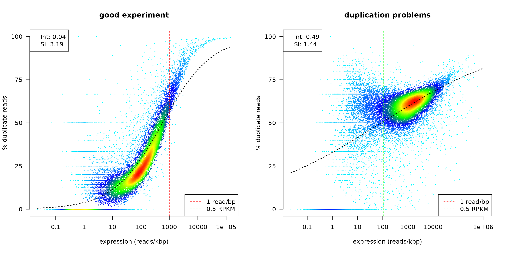
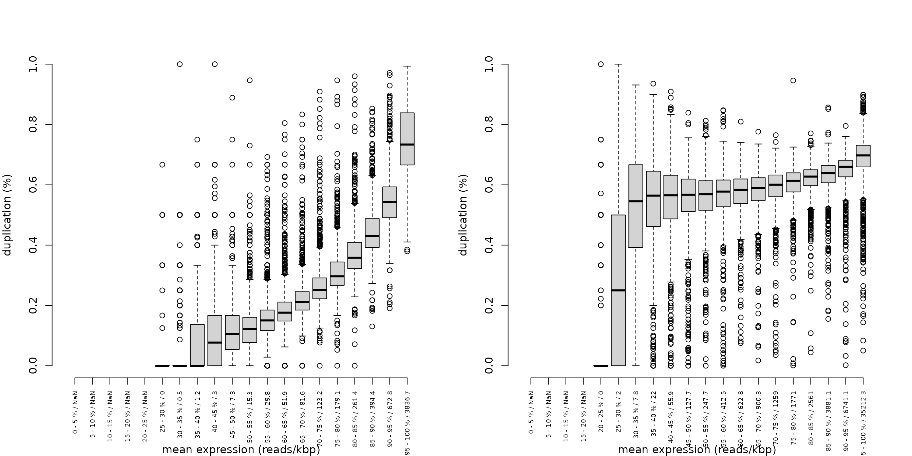
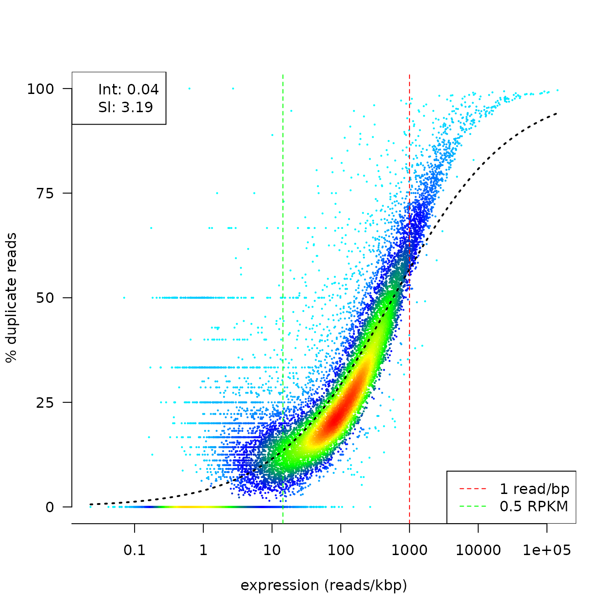
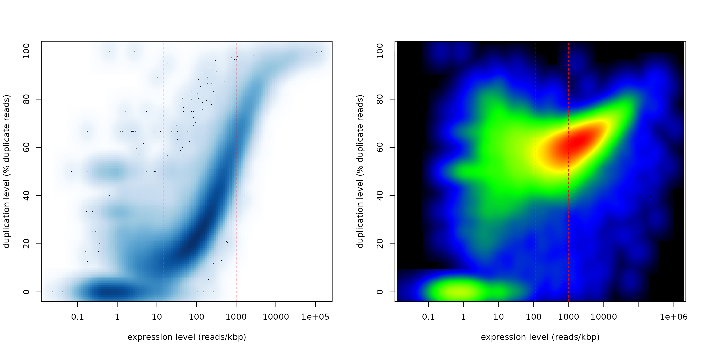
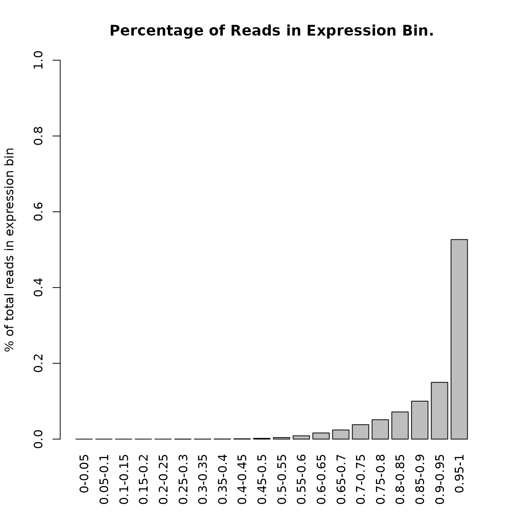
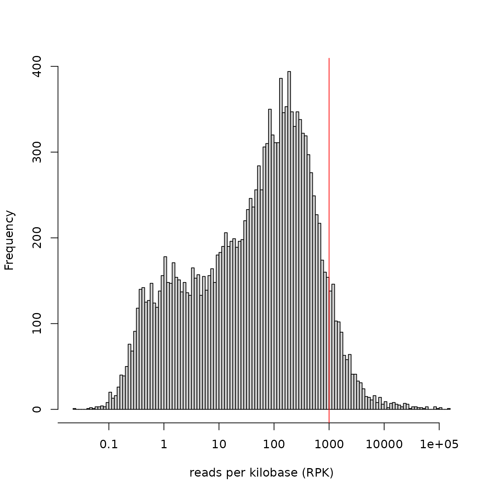
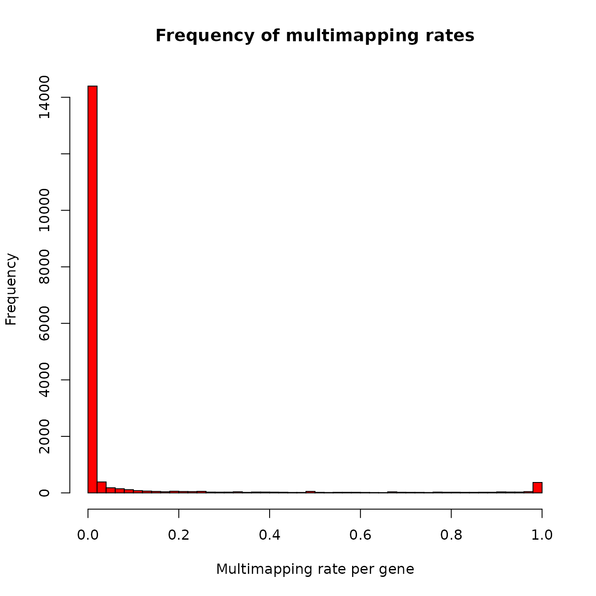

Using the dupRadar package
Sergi Sayols, Holger Klein
June 23, 2015
dupRadar.RmdIntroduction to dupRadar
RNA-Seq experiments are a common strategy nowadays to quantify the gene expression levels in cells. Due to its higher sensitivity compared to arrays and the ability to discover novel features, makes them the choice for most modern experiments.
In RNA-Seq - as in all other NGS applications - quality control is essential. Current NGS workflows usually involve PCR steps at some point, which involves the danger of PCR artefacts and over-amplification of reads. For common DNA-based assays PCR duplicates are often simply removed before further analysis and their overall fraction or the read multiplicity taken as quality metrics. In RNA-Seq however, apart from the technical PCR duplicates, there is a strong source for biological read duplicates: for a given gene length and sequencing depth there exists an expression level beyond which it is not possible to add place more reads inside a gene locus without placing a second read exactly on the position of an already existing read. For this reason the overall duplication rate is not a useful measure for RNA-Seq.
As in the NGS/RNA-Seq QC ecosystem there were no suitable tools to address this question, we set out to develop a new tool. The dupRadar package gives an insight into the duplication problem by graphically relating the gene expression level and the duplication rate present on it. Thus, failed experiments can be easily identified at a glance.
Note: by now RNA-Seq protocols have matured so that for bulk RNA protocols data rarely suffer from technical duplicates. With newer low-input or single cell RNA-Seq protocols technical duplicates possible problems are worth to be checked for by default, especially if protocols are pushed to or beyond their boundaries. Paired-end libraries make the distinction between duplicates due to highly expressed genes and PCR duplicates easier, but the problem itself is not completely solved, especially at higher sequencing depths.
Getting started using dupRadar
Preparing your data
Previous to running the duplication rate analysis, the BAM file with your mapped reads has to be duplicate marked with a like Picard, or the faster BamUtil dedup BioBamBam. The dupRadar package only works with duplicate marked BAM files.
If you do not have/want a duplication marking step in your default pipeline, the dupRadar package includes, for your convenience, wrappers to properly call some of these tools from your R session. Note that you still have to supply the path of the dupmarker installation though:
Now, simply call the wrapper:
# call the duplicate marker and analyze the reads
bamDuprm <- markDuplicates(dupremover="bamutil",
bam="test.bam",
path="/opt/bamUtil-master/bin",
rminput=FALSE)Simply specify which tool to use, the path where this tool is installed, and the input bam file to be analyzed. After marking duplicates, it’s safe to remove to original BAM file in order to save space.
The dupRadar package currently comes with support for:
After the BAM file is marked for duplicates, dupRadar is ready to analyze how the duplication rate is related with the estimated gene expression levels.
A GTF file
Unless there is any specific reason, dupRadar can use the same GTF file that will be later used to count the reads falling on features.
A valid GTF file can be obtained from UCSC, Ensembl, the iGenomes or other projects.
Note that the resulting duplication rate plots depend on the GTF annotation used. GTF files from the gencode projects result in a less clear picture of duplication rates, as there are many more features and feature types annotated, which overlap heavily as well. In some cases creating the plots only using subsets of gencode annotation files (e.g. just protein coding genes) serve the QC purpose of this tool better.
AnnotationHub as a source of GTF files
The Bioconductor AnnotationHub package provides an alternative approach to obtain annotation in GTF format from entities such as Ensembl, UCSC, ENCODE, and 1000 Genomes projects.
This is partly outlined in the AnnotationHub ‘HOWTO’ vignette section “Ensembl GTF and FASTA files for TxDb gene models and sequence queries”; for the Takifugu example, the downloaded GTF file is available from the cache.
if(suppressWarnings(require(AnnotationHub))) {
ah = AnnotationHub()
query(ah, c("ensembl", "80", "Takifugu", "gtf")) # discovery
cache(ah["AH47101"]) # retrieve / file path
}## AH47101
## "/home/sergi/.cache/R/AnnotationHub/27ae865568bdd_52579"dupRate demo data
In the package we include two precomputed duplication matrices for two RNASeq experiments used as examples of a good and a failed (in terms of high redundancy of reads) experiments. The experiments come from the ENCODE project, as a source of a wide variety of protocols, library types and sequencing facilities.
Load the example dataset with:
attach(dupRadar_examples)The duplication rate analysis
The analysis requires some info about the sequencing run and library preparation protocol:
- The strandess information about the reads: is the sequencing strand specific? if so, are the reads reversely sequenced?
- Are the reads paired, or single?
Due to its phenomenal performance, internally we use the featureCounts() function from the Bioconductor Rsubread package, which also supports multiple threads.
# The call parameters:
bamDuprm <- "test_duprm.bam" # the duplicate marked bam file
gtf <- "genes.gtf" # the gene model
stranded <- 2 # '0' (unstranded), '1' (stranded) and '2' (reversely stranded)
paired <- FALSE # is the library paired end?
threads <- 4 # number of threads to be used
# Duplication rate analysis
dm <- analyzeDuprates(bamDuprm,gtf,stranded,paired,threads)The duplication matrix contains read counts in different scenarios and RPK and RPKM values for every gene.
| ID | geneLength | allCountsMulti | filteredCountsMulti | dupRateMulti | dupsPerIdMulti | RPKMulti | RPKMMulti | allCounts | filteredCounts | dupRate | dupsPerId | RPK | RPKM |
|---|---|---|---|---|---|---|---|---|---|---|---|---|---|
| Xkr4 | 3634 | 2 | 2 | 0.0000000 | 0 | 0.5503577 | 0.0117159 | 2 | 2 | 0.0000000 | 0 | 0.5503577 | 0.0117159 |
| Rp1 | 9747 | 0 | 0 | NaN | 0 | 0.0000000 | 0.0000000 | 0 | 0 | NaN | 0 | 0.0000000 | 0.0000000 |
| Sox17 | 3130 | 0 | 0 | NaN | 0 | 0.0000000 | 0.0000000 | 0 | 0 | NaN | 0 | 0.0000000 | 0.0000000 |
| Mrpl15 | 4203 | 429 | 261 | 0.3916084 | 168 | 102.0699500 | 2.1728436 | 419 | 258 | 0.3842482 | 161 | 99.6906971 | 2.1221946 |
| Lypla1 | 2433 | 1106 | 576 | 0.4792043 | 530 | 454.5828196 | 9.6770634 | 1069 | 562 | 0.4742750 | 507 | 439.3752569 | 9.3533280 |
| Tcea1 | 2847 | 2890 | 1046 | 0.6380623 | 1844 | 1015.1036178 | 21.6093121 | 1822 | 696 | 0.6180022 | 1126 | 639.9719002 | 13.6235871 |
Plotting and interpretation
The number of reads per base assigned to a gene in an ideal RNA-Seq data set is expected to be proportional to the abundance of its transcripts in the sample. For lowly expressed genes we expect read duplication to happen rarely by chance, while for highly expressed genes - depending on the total sequencing depth - we expect read duplication to happen often.
A good way to learn if a dataset is following this trend is by relating the normalized number of counts per gene (RPK, as a quantification of the gene expression) and the fraction represented by duplicated reads.
The dupRadar offers several functions to assess this relationship. The most prominent may be the 2d density scatter plot:
## make a duprate plot (blue cloud)
par(mfrow=c(1,2))
duprateExpDensPlot(DupMat=dm) # a good looking plot
title("good experiment")
duprateExpDensPlot(DupMat=dm.bad) # a dataset with duplication problems
title("duplication problems")
## duprate boxplot
duprateExpBoxplot(DupMat=dm) # a good looking plot
duprateExpBoxplot(DupMat=dm.bad) # a dataset with duplication problems
The duprateExpDensPlot has helper lines at the threshold of 1 read/bp and at 0.5 RPKM. Moreover by default a generalized linear model is fit to the data and overplotted (see also below).
Fitting a model into the data
To summarize the relationship between duplication rates and gene expression, we propose fitting a logistic regression curve onto the data. With the coefficients of the fitted model, one can get an idea of the initial duplication rate at low read counts (Intercept) and the progression of the duplication rate along with the progression of the read counts (Slope).
duprateExpDensPlot(DupMat=dm)
# or, just to get the fitted model without plot
fit <- duprateExpFit(DupMat=dm)
cat("duprate at low read counts: ",fit$intercept,"\n",
"progression of the duplication rate: ",fit$slope,fill=TRUE)## duprate at low read counts: 0.04075061
## progression of the duplication rate:
## 3.186793Our main use case for that function is the condensation of the plots into quality metrics that can be used for automatic flagging of possibly problematic samples in large experiments or aggregation with other quality metrics in large tables to analyse interdependencies.
The duprateExpBoxplot plot shows the range of the duplication rates at 5% bins (default) along the distribution of RPK gene counts. The x-axis displays the quantile of the RPK distribution, and the average RPK of the genes contained in this quantile.
Individual genes can be identified in the plot:
## INTERACTIVE: identify single points on screen (name="ID" column of dm)
duprateExpPlot(DupMat=dm) # a good looking plot
duprateExpIdentify(DupMat=dm)One can also call the function duprateExpPlot to get smooth color density representation of the same data:
par(mfrow=c(1,2))
cols <- colorRampPalette(c("black","blue","green","yellow","red"))
duprateExpPlot(DupMat=dm,addLegend=FALSE)
duprateExpPlot(DupMat=dm.bad,addLegend=FALSE,nrpoints=10,nbin=500,colramp=cols)
Any further parm sent to the duprateExpPlot is also sent to the smoothScatter function.
Comparing the fitted parameters to other datasets
The parameters of the fitted model may mean very little (or just nothing) for many, unless there’s other data to compare with. We provide the pre-computed duplication matrices for all the RNA-Seq experiments publicly available from the ENCODE project, for human and mouse.

alt text
With the experience from the ENCODE datasets, we expect from single read experiments little duplication at low RPKM (low intercept) rapidly rising because of natural duplication (high slope). In contrast, paired-end experiments have a more mild rising of the natural duplication (low slope) due to having higher diversity of reads pairs since pairs with same start may still have different end.
The common denominator for both designs is the importance of having a low intercept, suggesting that duplication rate at lowly expressed genes may serve as a quality measure.
All the pre-computed duplication matrices are available in the dupRadar Github site.
Other plots
CAVEAT: Sometimes in discussions duplicate reads (i.e. two physically different reads are mapped to the exact same position) and multi-mapping reads (i.e. a single read is mapped to two or more locations in the genome) are mixed up. dupRadar’s main focus are PCR duplicates in RNA-Seq. However internally we keep track of unique mappers and multimappers, and we use both in some of the examples, to illustrate use cases of our package beyond the main aim. Multi-mapping reads are completely independent of PCR duplicates.
Apart from the plots relating RPK and duplication rate, the dupRadar package provides some other useful plots to extract information about the gene expression levels.
An interesting quality metric are the fraction of reads taken up by groups of genes binned by 5% expression levels.
readcountExpBoxplot(DupMat=dm)
In the example we see that the 5% of highest expressed genes in our sample data set take up around 60% of all reads.
The distribution of RPK values per genes can be plotted with:
expressionHist(DupMat=dm)
This would help in identifying skewed distributions with unusual amount of lowly expressed genes, or to detect no consensus between replicates.
Other information deduced from the data
The duplication rate matrix calculated by the function analyzeDuprates() contains some useful information about the sequencing experiment, that can be used to assess the quality of the data.
Fraction of multimappers per gene
Analogous to per gene duplication rate, the fraction of mutimappers can be easily calculated fom the duplication matrix.
Taking the counts from the column allCountsMulti, and substracting form it the counts from the column allCounts, one can get the total number of multihits. Thus, the fraction of multihits per gene can be calculating then dividing by allCountsMulti.
# calculate the fraction of multimappers per gene
dm$mhRate <- (dm$allCountsMulti - dm$allCounts) / dm$allCountsMulti
# how many genes are exclusively covered by multimappers
sum(dm$mhRate == 1, na.rm=TRUE)## [1] 295
# and how many have an RPKM (including multimappers) > 5
sum(dm$mhRate==1 & dm$RPKMMulti > 5, na.rm=TRUE)## [1] 8
# and which are they?
dm[dm$mhRate==1 & dm$RPKMMulti > 5, "ID"]## [1] GPR89C LOC728643 LOC606724 TBC1D3C TBC1D3H
## [6] MIR650 LOC100133050 HIST1H4J
## 23228 Levels: 1/2-SBSRNA4 A1BG A1BG-AS1 A1CF A2LD1 A2M A2ML1 A2MP1 ... ZZZ3We can also generate an overall picture about less extreme cases:
hist(dm$mhRate,
breaks=50,
col="red",
main="Frequency of multimapping rates",
xlab="Multimapping rate per gene",
ylab="Frequency")
Also the direct comparison of reads per kilobase between uniquely and multimappers is possible.
# comparison of multi-mapping RPK and uniquely-mapping RPK
plot(log2(dm$RPK),
log2(dm$RPKMulti),
xlab="Reads per kb (uniquely mapping reads only)",
ylab="Reads per kb (all including multimappers, non-weighted)"
)Use with identify() to annotate interesting cases interactively.
Connection between possible PCR artefacts and GC content
In some cases we wondered about influence of GC content on PCR artefacts. An easy way to check using our dupRadar package in conjunction with biomaRt is demonstrated in the following. For simplicity we use our demo data here in which we do not see a big influence.
library(dupRadar)
library(biomaRt)
## for detailed explanations on biomaRt, please see the respective
## vignette
## set up biomart connection for mouse (needs internet connection)
ensm <- useMart("ensembl")
ensm <- useDataset("mmusculus_gene_ensembl", mart=ensm)
## get a table which has the gene GC content for the IDs that have been
## used to generate the table (depends on the GTF annotation that you
## use)
tr <- getBM(attributes=c("mgi_symbol", "percentage_gc_content"),
values=TRUE, mart=ensm)
## create a GC vector with IDs as element names
mgi.gc <- tr$percentage_gc_content
names(mgi.gc) <- tr$mgi_symbol
## using dm demo duplication matrix that comes with the package
## add GC content to our demo data and keep only subset for which we can
## retrieve data
keep <- dm$ID %in% tr$mgi_symbol
dm.gc <- dm[keep,]
dm.gc$gc <- mgi.gc[dm.gc$ID]
## check distribution of annotated gene GC content (in %)
boxplot(dm.gc$gc, main="Gene GC content", ylab="% GC")alt text
Now we can compare the dependence of duplication rate on expression level independently for below and above median GC genes (and to mention again, in this data set we don’t have a big difference).
par(mfrow=c(1,2))
## below median GC genes
duprateExpDensPlot(dm.gc[dm.gc$gc<=45,], main="below median GC genes")
## above median GC genes
duprateExpDensPlot(dm.gc[dm.gc$gc>=45,], main="above median GC genes")alt text
Conclusion
The dupRadar package provides a framework for the analysis of duplicate rates in RNAseq datasets. In addition, it includes a set of convenient wrappers to correctly call some common tools used for marking PCR duplicated reads in the BAM file. It’s shipped as Bioconductor package in order to offer a common framework for all the tools involved, and simplify its use.
Including dupRadar into pipelines
To include dupRadar as a single step in an RNA-Seq pipeline, integration into a short R-script can be done like in the following:
#!/usr/bin/env Rscript
########################################
##
## dupRadar shell script
## call dupRadar R package from the shell for
## easy integration into pipelines
##
## Holger Klein & Sergi Sayols
##
## https://github.com/ssayols/dupRadar
##
## input:
## - _duplicate marked_ bam file
## - gtf file
## - parameters for duplication counting routine:
## stranded, paired, outdir, threads.
##
########################################
library(dupRadar)
####################
##
## get name patterns from command line
##
args <- commandArgs(TRUE)
## the bam file to analyse
bam <- args[1]
## usually, same GTF file as used in htseq-count
gtf <- gsub("gtf=","",args[2])
## no|yes|reverse
stranded <- gsub("stranded=","",args[3])
## is a paired end experiment
paired <- gsub("paired=","",args[4])
## output directory
outdir <- gsub("outdir=","",args[5])
## number of threads to be used
threads <- as.integer(gsub("threads=","",args[6]))
if(length(args) != 6) {
stop (paste0("Usage: ./dupRadar.sh <file.bam> <genes.gtf> ",
"<stranded=[no|yes|reverse]> paired=[yes|no] ",
"outdir=./ threads=1"))
}
if(!file.exists(bam)) {
stop(paste("File",bam,"does NOT exist"))
}
if(!file.exists(gtf)) {
stop(paste("File",gtf,"does NOT exist"))
}
if(!file.exists(outdir)) {
stop(paste("Dir",outdir,"does NOT exist"))
}
if(is.na(stranded) | !(grepl("no|yes|reverse",stranded))) {
stop("Stranded has to be no|yes|reverse")
}
if(is.na(paired) | !(grepl("no|yes",paired))) {
stop("Paired has to be no|yes")
}
if(is.na(threads)) {
stop("Threads has to be an integer number")
}
stranded <- if(stranded == "no") 0 else if(stranded == "yes") 1 else 2
## end command line parsing
##
########################################
########################################
##
## analyze duprates and create plots
##
cat("Processing file ", bam, " with GTF ", gtf, "\n")
## calculate duplication rate matrix
dm <- analyzeDuprates(bam,
gtf,
stranded,
(paired == "yes"),
threads)
## produce plots
## duprate vs. expression smooth scatter
png(file=paste0(outdir,"/",gsub("(.*)\\.[^.]+","\\1",basename(bam)),"_dupRadar_drescatter.png"),
width=1000, height=1000)
duprateExpDensPlot(dm, main=basename(bam))
dev.off()
## expression histogram
png(file=paste0(outdir,"/",gsub("(.*)\\.[^.]+","\\1",basename(bam)),"_dupRadar_ehist.png"),
width=1000, height=1000)
expressionHist(dm)
dev.off()
## duprate vs. expression boxplot
png(file=paste0(outdir,"/",gsub("(.*)\\.[^.]+","\\1",basename(bam)),"_dupRadar_drebp.png"),
width=1000, height=1000)
par(mar=c(10,4,4,2)+.1)
duprateExpBoxplot(dm, main=basename(bam))
dev.off()Citing dupRadar
Please consider citing dupRadar if used in support of your own research:
citation("dupRadar")## To cite package 'dupRadar' in publications use:
##
## Sergi Sayols, Denise Scherzinger and Holger Klein (2016): dupRadar: a
## Bioconductor package for the assessment of PCR artifacts in RNA-Seq
## data. BMC Bioinformatics, 17:428, doi:10.1186/s12859-016-1276-2
##
## A BibTeX entry for LaTeX users is
##
## @Article{,
## title = {dupRadar: a Bioconductor package for the assessment of PCR artifacts in RNA-Seq data},
## author = {Sergi Sayols and Denise Scherzinger and Holger Klein},
## year = {2016},
## journal = {BMC Bioinformatics},
## doi = {10.1186/s12859-016-1276-2},
## url = {http://dx.doi.org/10.1186/s12859-016-1276-2},
## volume = {17},
## issue = {1},
## pages = {428},
## }Reporting problems or bugs
If you run into problems using dupRadar, the Bioconductor Support site is a good first place to ask for help. If you think there is a bug or an unreported feature, you can report it using the dupRadar Github site.
Session info
The following package and versions were used in the production of this vignette.
## R version 4.3.1 (2023-06-16)
## Platform: x86_64-pc-linux-gnu (64-bit)
## Running under: Debian GNU/Linux trixie/sid
##
## Matrix products: default
## BLAS: /usr/lib/x86_64-linux-gnu/atlas/libblas.so.3.10.3
## LAPACK: /usr/lib/x86_64-linux-gnu/atlas/liblapack.so.3.10.3; LAPACK version 3.11.0
##
## locale:
## [1] LC_CTYPE=en_US.UTF-8 LC_NUMERIC=C
## [3] LC_TIME=en_US.UTF-8 LC_COLLATE=en_US.UTF-8
## [5] LC_MONETARY=en_US.UTF-8 LC_MESSAGES=en_US.UTF-8
## [7] LC_PAPER=en_US.UTF-8 LC_NAME=C
## [9] LC_ADDRESS=C LC_TELEPHONE=C
## [11] LC_MEASUREMENT=en_US.UTF-8 LC_IDENTIFICATION=C
##
## time zone: Europe/Madrid
## tzcode source: system (glibc)
##
## attached base packages:
## [1] stats graphics grDevices utils datasets methods base
##
## other attached packages:
## [1] AnnotationHub_3.8.0 BiocFileCache_2.8.0 dbplyr_2.3.3
## [4] BiocGenerics_0.46.0 dupRadar_1.30.3 knitr_1.44
## [7] BiocStyle_2.28.1
##
## loaded via a namespace (and not attached):
## [1] KEGGREST_1.40.0 xfun_0.40
## [3] bslib_0.5.1 Biobase_2.60.0
## [5] lattice_0.21-8 bitops_1.0-7
## [7] vctrs_0.6.3 tools_4.3.1
## [9] generics_0.1.3 stats4_4.3.1
## [11] curl_5.0.2 AnnotationDbi_1.62.2
## [13] tibble_3.2.1 fansi_1.0.4
## [15] RSQLite_2.3.1 blob_1.2.4
## [17] pkgconfig_2.0.3 Rsubread_2.14.2
## [19] Matrix_1.6-1 KernSmooth_2.23-22
## [21] desc_1.4.2 S4Vectors_0.38.1
## [23] GenomeInfoDbData_1.2.10 lifecycle_1.0.3
## [25] compiler_4.3.1 stringr_1.5.0
## [27] Biostrings_2.68.1 textshaping_0.3.6
## [29] codetools_0.2-19 GenomeInfoDb_1.36.2
## [31] httpuv_1.6.11 htmltools_0.5.6
## [33] sass_0.4.7 RCurl_1.98-1.12
## [35] yaml_2.3.7 interactiveDisplayBase_1.38.0
## [37] crayon_1.5.2 pillar_1.9.0
## [39] pkgdown_2.0.7 later_1.3.1
## [41] jquerylib_0.1.4 ellipsis_0.3.2
## [43] cachem_1.0.8 mime_0.12
## [45] tidyselect_1.2.0 digest_0.6.33
## [47] stringi_1.7.12 dplyr_1.1.3
## [49] purrr_1.0.2 bookdown_0.35
## [51] BiocVersion_3.17.1 rprojroot_2.0.3
## [53] fastmap_1.1.1 grid_4.3.1
## [55] cli_3.6.1 magrittr_2.0.3
## [57] utf8_1.2.3 withr_2.5.0
## [59] promises_1.2.1 filelock_1.0.2
## [61] rappdirs_0.3.3 bit64_4.0.5
## [63] XVector_0.40.0 rmarkdown_2.25
## [65] httr_1.4.7 bit_4.0.5
## [67] png_0.1-8 ragg_1.2.5
## [69] memoise_2.0.1 shiny_1.7.5
## [71] evaluate_0.21 IRanges_2.34.1
## [73] rlang_1.1.1 Rcpp_1.0.11
## [75] xtable_1.8-4 glue_1.6.2
## [77] DBI_1.1.3 BiocManager_1.30.22
## [79] jsonlite_1.8.7 R6_2.5.1
## [81] zlibbioc_1.46.0 systemfonts_1.0.4
## [83] fs_1.6.3